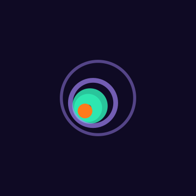

Lockup, stacked, wordmark on dark
Lockup, stacked, wordmark on light
Wordmark and dark icon on Athena Core (#2EE6B0)
Icon at 16, 32, 48 and 180 px
Light icon at the same sizes
Favicon in a browser tab, and the 400 px avatar in a circle crop

Clear space: the height of the icon on every side
Minimum size: icon 16 px, lockup 120 px wide
Patterns: rings (from the hero) and dots